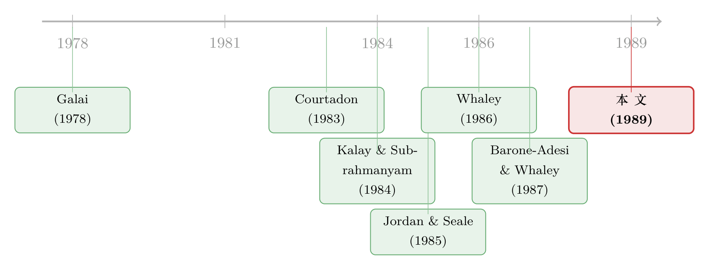

「行权」这道送分题，为什么还有人交白卷？
本文读的是 Gay, Kolb & Yung (1989, JFE)：他们逐日翻看了 1985–1986 两年间美国国债期货期权的全部行权通知，结论是——交易者的行权行为「总体上」是理性的，但他们记录到了数以千计的「该行权却没行权」，以及一小撮「不该行权却行权了」。最常见的错误不是冲动下单，而是疏于盯盘；更耐人寻味的是，他们还证明投资者会用上收盘之后、行权截止之前到达的信息。
1 一道写在教科书第一页的送分题
美式期权（American option）什么时候该提前行权，是金融学里少有的「有标准答案」的问题。规则写得清清楚楚：到期日只看行权价与标的价格的高下；到期之前，则看标的价格有没有越过那条「临界价」。任何一本衍生品教材都会把它讲得明明白白。
可是，人真的会照着标准答案做吗？
这听上去几乎不值一问。一个理性的、追逐利润的交易者，面对一道送分题，怎么会交白卷？然而 Gay、Kolb 和 Yung 这篇 1989 年的论文，恰恰把这个「不值一问」的问题，老老实实地拿数据问了一遍。他们的做法朴素到近乎笨拙：把芝加哥期货交易所（Chicago Board of Trade, CBOT）两年里递交上来的每一张行权通知都找出来，按到期月、按行权价拆开，一笔一笔对照「标准答案」打分。
于是一个有趣的张力出现了：如果人人都是理性的，这篇论文将什么都发现不了，是一篇注定无聊的文章；可如果发现了错误，那错误本身——它的形状、它的方向、它的代价——就成了一面照妖镜，照出真实世界里的交易者，到底是在哪一步、为什么会与那个完美的理性人分道扬镳。
（关于「用错尺子去决定何时行权会有多贵」，可参见《扔掉十亿美元：当你用错了一把尺子去决定『何时行权』》；而同一份期权在不同持有人眼里为何算出不同的账，可参见《同一份期权，老板算的账和股东算的账为什么不一样？》。）
2 为什么偏偏挑「期货期权」
首先要回答的，是一个选样问题：要检验提前行权的理性，为什么作者不用最常见的股票期权，偏偏挑了国债期货期权（Treasury bond futures options）？
答案在于「提前行权」这件事的稀缺性。对股票期权而言，理性的提前行权只可能发生在标的股票的最后一个含息日（cum-dividend date），一只股票一年顶多三个除息日，于是真正「值得研究」的行权决策少得可怜。而期货期权不同——它的理性提前行权可以发生在期权生命中的任何一天。这一点至关重要：它让样本一下子变得丰沛起来。两年里，作者手上攒下了将近 700,000 笔行权记录，其中超过一半发生在到期之前。提前行权在这个市场里不是边角料，而是主菜。
接着，一个自然的问题是：怎么给「理性」打分？作者把问题切成了两半，因为这两半的难度根本不在一个量级上。
到期那一天，行权决策干净得不能再干净：只取决于行权价 X 和标的期货价格。价内就该行权，价外就不该，没有任何模型介入的余地。这是「硬证据」——错了就是错了，赖不掉。
到期之前，事情就复杂了。这时是否该行权，隐含地依赖于一个对「期权真实价值」的模型。作者借用了 Barone-Adesi 和 Whaley (1987) 的美式期货期权定价模型，它除了给出看涨、看跌期权的价值，还能算出一个临界期货价格（critical futures price）F*——持有人在「继续持有」与「立即行权」之间恰好无差异的那个价格。规则因此变得斩钉截铁：看涨期权当且仅当期货价格超过 F* 时才该立即行权，看跌期权反之。
3 一个被「晚上八点」搅乱的识别难题
但真正关键的一步，藏在一个制度细节里。
清算公司（clearing corporation）的规则，实际上逼着交易者在收市之后才做行权决定——大多数人要等到晚上 8 点才递交行权通知。可问题是，决定行权与否，依赖的是「此刻的均衡期货价格」，而市场早在下午 2 点就收了盘。下午 2 点定下的结算价（settlement price），未必是晚上 8 点那个不可观测的均衡价的好代理——尤其当收盘后、截止前有新信息到达时（比如，美联储宣布下调贴现率）。
于是反转出现了：这个看似碍事的制度细节，反而被作者变成了一把锋利的工具。既然真实的均衡价看不见，他们干脆同时用三个代理去逼近它，并为每个代理算出错误行权的美元损失：
- SETTLE：用下午 2 点的结算价
Fs当代理； - OPEN：用次日开盘价
Fo当代理； - BEST：在
Fs与Fo之间，取对「理性假说」更有利的那一个。
这三把尺子的妙处在于：如果交易者只盯着收盘价做决定，那么用 SETTLE 量出来的「错误」就应该是真错误；可如果他们其实用上了晚间信息，那么很多在 SETTLE 下显得「不该行权」的决定，换上 OPEN 或 BEST 一量，就会自动消失。SETTLE 与 BEST 之间那道缝隙，量的正是「投资者到底有没有偷偷用上盘后信息」。
到期时各代理下的行权条件与损失，论文用一张总表给了出来。以看涨期权、SETTLE 为例：当 Fs > X 就该行权，不行权的损失是 Fs − X；当 Fs < X 就不该行权，硬行权的损失是 X − Fs。到期之前则换成临界价：看涨期权当 Fs > F* 时该行权，不行权的损失只是一天的利息 r(Fs − X)（因为明天还能再行权），而错误行权的损失是 C(Fs) − (Fs − X)，即扔掉了期权「活着」相对于其内在价值的那部分时间价值。
这个不对称非常重要，记住它，下文的结果全系于此：漏行权，每次只亏一天利息，便宜；错行权，每次亏掉整块时间价值，贵。
4 模型：临界价从哪里来
要把上面的 F* 算出来，得先把 Barone-Adesi–Whaley 的近似式摆开。美式期货看涨期权的价值，被拆成「欧式部分 + 提前行权溢价」两块：
$$ C(F,t;X) = c(F,t;X) + A_2\left(\frac{F}{F^*}\right)^{q_2}, \quad F < F^* $$
$$ C(F,t;X) = F - X, \quad F \ge F^* $$
第一行的直觉是：当期货价 F 还没够到临界价 F* 时，持有比行权更好，期权值「欧式价值 c 加上一块随 F 上升而膨胀的提前行权溢价」；第二行则说，一旦 F 越过 F*，再不行权就是浪费，期权价值塌缩到内在价值 F − X。两段在 F* 处平滑相接。
其中溢价系数与判别量为：
$$ A_2 = \frac{F^*}{q_2}\left\{1 - e^{-rt}N[d_1(F^*)]\right\} $$
$$ d_1(F^*) = \frac{\ln(F^*/X) + \tfrac{1}{2}\sigma^2 t}{\sigma\sqrt{t}} $$
而那条临界价 F* 本身，没有闭式解，要靠迭代去解下面这个「平滑贴合」方程——它的含义是：在 F = F* 处，立即行权的收益 F* − X 恰好等于继续持有的价值：
$$ F^* - X = c(F^*,t;X) + \left\{1 - e^{-rt}N[d_1(F^*)]\right\}\frac{F^*}{q_2} $$
把最核心的那一个方程拆开来看：
到了这一步，「理性行权」就有了一把可操作的尺子：把 F* 算出来，看实际价格在它的哪一侧，就知道该不该行权。剩下的，全是把两年的通知单往这把尺子上贴。
模型准不准，直接决定了「到期前」的检验靠不靠谱。作者顺手做了体检：在全部 10,473 个看涨期权观测里，模型价平均比市场价高 $5.40（每 $100,000 合约）；10,605 个看跌期权里高 $30.70。对照 Jordan 和 Seale (1985) 报告的国债期货期权买卖价差（平价附近约 $15.63–$31.25），模型误差比价差还小。尺子是干净的。
5 数据
样本是 1985 年 3 月至 1986 年 12 月之间到期的 8 个国债期货合约及其上的期权。结算价、成交量、未平仓量来自 CBOT；真实行权记录则来自美国商品期货交易委员会（Commodity Futures Trading Commission, CFTC），按行权价与到期月逐笔登记。利率取自《华尔街日报》上离各到期日最近的国库券买卖报价中点。两套数据拼起来，构成了每只期权在其整个交易生命里的全部行权流水。
两年合计 687,140 笔行权：看涨 573,912 笔，看跌 113,228 笔；其中 303,008 笔发生在到期及之后，384,132 笔发生在到期之前。一个值得注意的事实是：即便同一只期权（同到期、同行权价），交易者也常常只行权一部分未平仓量——这本身就暗示了，要么行权的人错了，要么没行权的人错了，二者之间存在真实的分歧。
6 主要结果：错误的「形状」
6.1 到期日——硬证据
先看最干净的到期日。这里的错误可以直接计算，赖不掉。
漏行权（failure to exercise）是大头。全部看涨期权合计，SETTLE 口径下有 4,151 次该行权而未行权，总损失 $895,553，平均每次 $216。其中 1986 年 12 月一个合约就贡献了 3,986 次漏行权、$622,615 的损失（平均每次 $156）。看跌期权那边，漏行权 2,996 次，损失 $446,657，平均 $149。
这些损失大到无法用交易成本解释。论文交代得很清楚：场内交易者行权的边际成本超过 $1.00，场外交易者也不过最高 $100 每张合约。区区一两百美元的成本，挡不住几百美元的漏行权损失。换句话说，钱就摆在桌上，却没人去捡——而最合理的解释，是这些人压根没在盯盘。
那「不该行权却行权了」的错误行权（faulty exercise）呢？这里藏着全文最漂亮的一个反转。
在 SETTLE 口径下，看涨期权的错误行权高达 15,988 次、损失约 $2,000,250，看起来触目惊心。可一旦换上 BEST 口径——允许用次日开盘价来判断——这个数字塌缩到只剩 10 次。也就是说，那些以下午 2 点结算价衡量「显然不该行权」的决定，绝大多数在把晚间信息算进去之后，根本就是对的。反观漏行权，SETTLE 的 4,151 次到 BEST 的 4,151 次几乎纹丝不动——漏掉就是漏掉，没有任何「其实我用了内幕信息」能为它开脱。
这一冷一热，恰好对上了论文最核心的两个论断：漏行权是真实的疏忽，错行权大多是被误判的理性。而后者反过来证明了——投资者确实在使用收盘后、截止前到达的信息。
6.2 到期之前——便宜的错与贵的错
到期之前的图景，与那个「不对称的损失」严丝合缝。
看涨期权这边，漏行权极其频繁但极其廉价：SETTLE 口径下记录到约 1,761,296 笔该行权而未行权（按合约计），总损失 $2,739,574，但平摊下来每次只亏 $1.56——正是「一天利息」那个量级。换 BEST 口径，约 1,649,552 笔，每次约 $1.58，几乎不变。
错误行权则恰好相反——稀少但昂贵：SETTLE 下 53,673 次，总损失 $736,282，平均每次 $12.34；BEST 下降到 46,509 次、每次 $11.11。一次错行权的代价，是一次漏行权的近八倍。
把两边合起来，论文的判词是克制而清楚的：交易者「在行权决策上表现得高度理性，并且大量使用了收市之后到达的信息」。错误确实存在，但它们的分布告诉我们错在哪——人们不愿意为「死扛着不行权」付出代价（因为那代价小到几乎可以忽略），却很少会犯那种「白白扔掉时间价值」的贵错误。理性，不在于零失误，而在于把大错避开、只在小错上偷懒。
作者进一步用 Tables 6a/6b 把错误按「偏离临界价的幅度」排了序，发现大约三分之一的错误都挤在最靠近 F* 的那个窄带里——也就是说，错得离谱的极少，绝大多数错误都发生在「差一点点」的边界地带，那里本来就最难判断、代价也最小。这又是一条支持「总体理性」的证据。
7 文献脉络
把这篇论文放回它的坐标系，故事的线索其实是一条：人们一直想知道，理论上「最优」的期权行为，在现实中到底成不成立。
最早的一脉，是 Galai (1978) 那种「边界条件检验」——不直接谈理性，而是问股票期权价格符不符合理论推导出的下界（lower-boundary conditions）。这是一种间接的拷问：如果价格连最弱的无套利约束都违反，那市场就谈不上有效。

接着，定价模型这一支在稳步推进。Courtadon (1983) 提出了期货期权的估值模型，Whaley (1986) 把美式期货期权拆成「欧式价值 + 提前行权溢价」，而 Barone-Adesi 和 Whaley (1987) 给出了那个可操作的二次型近似与临界价 F*——正是本文赖以判断理性的那把尺子。没有这把尺子，「到期前」的检验根本无从谈起。
然后，一个更接近本文的转向来自 Kalay 和 Subrahmanyam (1984)。他们研究股票期权在除息日附近的收益，假定交易者理性行权，由此推出美式看涨期权在除息日不应有异常表现；可他们偏偏发现，那些「本该被行权」的期权在含息—除息区间出现了显著为负的超额收益，暗示着非理性。
本文的位置就此清晰：它不再「假定」理性、也不再绕道边界条件，而是直接把行权理性拿来检验——用一个提前行权机会丰沛的市场、一套完整的逐笔行权通知、一个能算出临界价的定价模型，正面回答「人到底听不听标准答案」。它的答案，比 Kalay–Subrahmanyam 的悲观结论温和得多：总体理性，错误有形，且人会用信息。
评论与延伸（Q&A + 研究方向）
(a) 几个可能的疑问
Q：既然「漏行权」每次只亏一天利息，那它真的算「非理性」吗？
这是全文最该追问的一点。作者自己也承认，到期前的漏行权平均损失只有
$1.56，低到几乎被任何交易成本盖过。所以更稳妥的读法是：到期前的漏行权未必是非理性，它可能只是「不值得为一天利息去操作」的理性懒惰。真正硬的证据在到期日——那里漏行权动辄亏几百美元，远超$1的场内成本，这才是说得通的「非理性」。
Q：BEST 口径会不会「作弊」，人为把错误抹掉、夸大了理性？
会，而且作者很清楚。BEST 在每笔决策上挑「对理性假说更有利」的价格，天然偏向于让交易者显得正确，是一个上界。它的价值不在于「证明」理性，而在于和 SETTLE 形成对照：如果一个错误连 BEST 都救不回来（比如那
4,151次到期日漏行权），那它就是铁打的真错误；而被 BEST 大量抹掉的错行权，则说明信息确实被用上了。把 BEST 单独拿去下结论才危险，作者没有。
Q：「到期前」的检验依赖 Barone-Adesi–Whaley 模型，模型错了怎么办？
这是联合假设问题：任何到期前的理性检验，都同时在检验「理性」与「模型准确性」。作者的防御是给模型做体检——模型价与市场价的平均偏离（看涨
$5.40、看跌$30.70）比买卖价差还小，说明定价误差不足以制造出大规模的假错误。但这只能缓解、不能消除担忧；到期日的结论不依赖任何模型，所以最可信。
Q：为什么错误高度集中在某几个合约（比如 1986 年 12 月）？
那个合约一家就占了到期日看涨漏行权的绝大部分（
3,986/4,151）。这提示错误未必是「人人都犯一点」的均匀分布，而可能是某些特定到期、特定时点（也许是结算与开盘价剧烈背离、或盘后有大新闻的日子）集中爆发。这反而支持「投资者在用盘后信息」——错误扎堆的地方，往往是信息变动最剧烈的地方。
Q：这和股票期权的「自动行权」规则比，说明了什么？
论文特意点出一个制度反差：股票期权对常规客户有「价内 3/4 点自动行权」的兜底，而本文样本期内的国债期货期权没有自动行权，全靠人工指令。漏行权之所以这么多，部分正是这个制度真空的产物——把「盯盘」的责任完全压给了交易者。这也暗示：制度设计能消化掉相当一部分「非理性」。
Q：错行权稀少而昂贵、漏行权频繁而廉价，这个不对称是巧合吗？
不是巧合，是损失结构的必然。漏行权的代价是「一天利息」这种 O(r) 的小量，错行权的代价是「整块时间价值」这种一阶量。一个粗心但不傻的交易者，自然会把注意力优先分配给「错了会很贵」的决定。结果就是：贵错误被避开，便宜错误被容忍——这本身就是一种有约束的理性。
(b) 几个可能的研究问题与提案
1. 自动行权制度的「准自然实验」
【经济故事】本文样本恰好在 1987 年 3 月合约之前，国债期货期权尚无自动行权；之后引入了「至少一个最小价格变动价内即自动行权」的规则。如果漏行权真是疏忽所致，那么自动行权的引入应当让到期日漏行权断崖式下降。这是一个干净的制度断点。
【可行性】中。需要 CFTC/CBOT 跨越制度变更前后的逐笔行权数据，识别策略是围绕规则生效日的断点回归或事件研究。难点在于拿到足够长的、制度变更后的微观行权记录；一旦拿到，识别相当干净。
2. 把同样的「行权理性」检验搬到公司债/信用衍生品
【经济故事】本文的方法论——用临界价把「该不该行权」量化，再对照真实通知打分——可以平移到可转债的转股、可赎回债的赎回时机上。信用市场的提前行权（转股、回售、赎回）同样有「标准答案」，而执行者（散户 vs 机构）的盯盘能力差异可能更大。
【可行性】中到高。可转债的转股记录与赎回公告是公开的，标的股价与债券条款可得；识别靠结构化定价模型给出最优执行边界，再看实际执行偏离多少。挑战在于条款异质性高，需逐券建模。
3. 谁在漏行权？把错误归因到交易者类型
【经济故事】本文只能看到「行权通知」，看不到通知背后是场内做市商、机构还是散户。如果能把行权记录连到交易者类别，就能检验一个直觉：盯盘成本最高、最业余的那群人，是不是漏行权的主力？这把「总体理性」拆成了「谁理性、谁不理性」。
【可行性】低到中。瓶颈是行权数据通常匿名化，交易者身份难以连接；若能借助监管端的账户级数据（类似一些内幕交易研究用到的明细），则可行，否则只能用合约特征（深度价内程度、未平仓集中度）做间接代理。
4. 盘后信息使用的「带宽」有多大
【经济故事】本文用 SETTLE 与 BEST 的缝隙，间接证明了投资者用上盘后信息。但能不能更进一步，量出他们到底用了多少？比如把贴现率公告、宏观数据发布这类盘后事件挑出来，看错行权在事件日是否系统性地「更像理性」。
【可行性】中。需要把行权日历与盘后宏观/货币政策事件日历对齐，做事件研究。数据可得性尚可（FOMC、贴现率公告有明确时点），识别上要小心区分「真用信息」与「事后看起来巧合」。
我的判断
这篇论文的贡献，不在于任何一个惊人的系数，而在于它把一个被默认为真的假设，第一次摊开在数据面前。在它之前，无数定价与实证研究都「假定理性行权」；它则用一套朴素到极致的方法——逐笔通知 × 临界价尺子——给这个假设打了分。结论的分寸感尤其值得称道：不是廉价地宣布「市场有效」，也不是猎奇地宣布「人都很蠢」，而是给出错误的形状（漏行权多、错行权少）、方向（贵错误被避开）、与代价（到期日的漏行权确实超出交易成本），并顺手证明了信息使用。这种「把异常的结构讲清楚」的实证品味，今天读来依然不过时。
对识别，我的主要担忧有二。其一是联合假设：到期前的全部结论都搭在 Barone-Adesi–Whaley 模型上，作者的模型体检缓解了它，但真正干净的证据只在不依赖模型的到期日。其二是交易成本的笼统：论文只能给出 $1–$100 的成本区间，却拿不到每个交易者面对的真实成本，于是「这笔漏行权到底算不算非理性」在个体层面始终留了一道缝——尤其在到期前那些平均损失仅 $1.56 的案例里，这道缝足以吞掉结论。
后续我最想看到的，是把「谁在犯错」补上。本文证明了错误存在且有形，但它是一幅匿名的总体画像。如果能借助账户级数据，把漏行权归因到具体的交易者类型，再叠加上 1987 年自动行权制度这个天然断点，我们就能从「市场总体理性吗」走到「非理性集中在谁身上、制度能不能把它消化掉」——那才是这条研究脉络真正该去的下一站。
参考文献
Barone-Adesi, G., & Whaley, R. E. (1987). Efficient analytic approximation of American option values. Journal of Finance 42(2), 301–320.
Courtadon, G. (1983). The pricing of options on default-free bonds. Journal of Financial and Quantitative Analysis 18(1), 75–100.
Galai, D. (1978). Empirical tests of boundary conditions for CBOE options. Journal of Financial Economics 6(2/3), 187–211.
Gay, G. D., Kolb, R. W., & Yung, K. (1989). Trader rationality in the exercise of futures options. Journal of Financial Economics 23(2), 339–361.
Jordan, J. V., & Seale, W. E. (1985). Transaction data tests of the Black model for Treasury bond futures options. Working paper.
Kalay, A., & Subrahmanyam, M. G. (1984). The ex-dividend day behavior of option prices. Journal of Business 57(1), 113–128.
Whaley, R. E. (1986). Valuation of American futures options: Theory and empirical tests. Journal of Finance 41(1), 127–150.